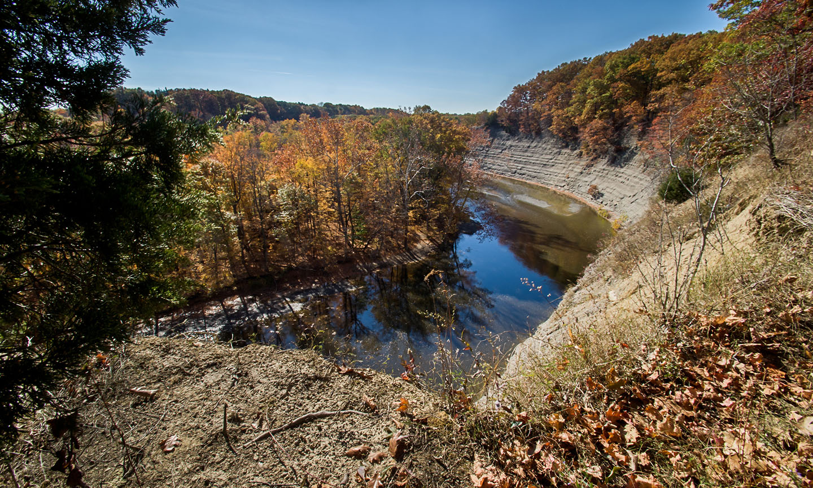
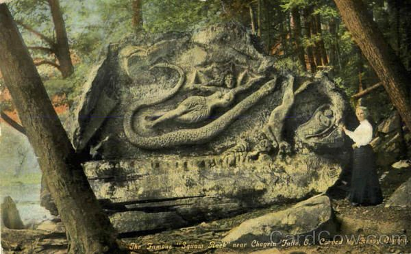

Cleveland has many beautiful parks
The Cleveland Metroparks
The Cleveland Metroparks are beautiful parks that are scattered all throughout the Cleveland area. These parks are all beautiful and very well taken care of, personally I would recommend visiting the park located here: Valley Pkwy Trail, North Olmsted, OH 44070. This park is full of life, there are many different species of birds to see, deer are everywhere, along with some other animals inhabiting the ponds and grasslands there. Not to mention the enormous shale cliff with the most beautiful view of the valley.
Edgewater park is right on Lake Erie, and offers Bike paths, walking paths, water access for boating, along with a fishing pier and some trails. You can go to and enjoy the beautiful beach, have a picnic, and watch the sunset on Lake Erie. This park also hosts events such as birdwatching, and in the summer Edgewater Live has concerts that fill the beach with music and partying. The park is very clean, which can be hard to come by with all of the liter that contaminate many beaches on Lake Erie. This park is perfect for a nice relaxing walk to clear your mind, or to go and have a nice picnic.

If you're more into going on hikes, walking through or near a creek, or simply just enjoy walking through beautiful parks then South Chargin Reservation is the place for you. There are beautiful spots to see waterfalls, nature, and the Henry Church Rock. The Henry Church Rock dates back to 1885, which is a carving of a woman, an eagle, a shield, and some others. This park is perfect for children and adults, there are many different trails you can follow, if you wanted you could spend a couple of hours or even the whole day here.
